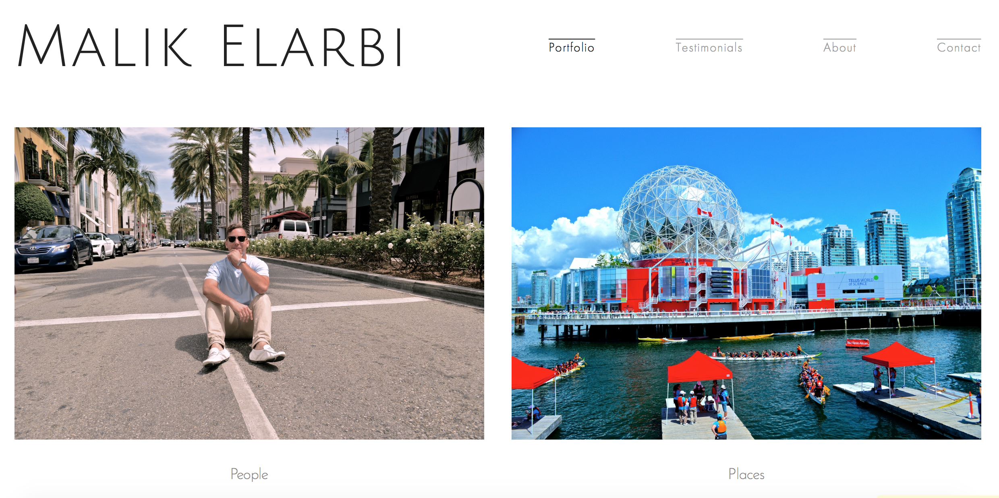

Programmed Projects
Purpose: For the BringMe Delivery team
Overview: This app software was made to track all the orders placed by app users; displaying where/when the order was made, when/where they were delivered, etc. It was supposed to be used to expand the company's delivery "bubble" and see where there can be improvement, but the company went in a different direction.
This project was very Javascript heavy, with multiple controllers being used. We also programmed the backend using C#, and even did the SQL DB work - but I had less to do with that.
This project uses Angular and Ionic frameworks, as well as package managers and organizers such as Bower, Yeoman, and Gulp.
Due to company protocol, I couldn't put the exact project online, but I've recreated the functionalities (without user data) and it can be found on my Github account under the "AdminApp" repository.
Purpose: To display my work
Overview: The is just a simple website intended to allow potential employers to understand what kind of work I've already done.
This website was made using only sublime. I made it very simple, all using only HTML and CSS. It's the first project I've ever done outside of a typical IDE.
The code can be found on my Github account under the "MySite" repository.
Purpose: To learn/for fun
Overview: It was essentially supposed to be an Instagram on a map. You can login and post photos that are attached to a location, or view all photos on a map without logging in.
Other than the basic HTML, and JavaScript on the page, I've used Google Maps APIs as well as a FireBase backend to deal with saving users and verifying logins.
This project also uses Angular and Ionic frameworks, as well as package managers and organizers such as Bower, Yeoman, and Gulp.
Can be found on my Github account under the "MyMap" repository.
Designs
Purpose: This is a friend's website for their photography. I didn't have anything to do with the code (I believe he used squarespace) but designed what it should look like in order to accurately refelct his work and personality.

It was meant to be clean & simple to allow the vibrant colors of his own photography take the attention of the user.
His contact information is available upon request.
Purpose: These are my own creations (powered by Tumblr) that I like to put together based on color schemes and just overall moods.


It was meant to be clean & simple to allow the vibrant colors of his own photography take the attention of the user.
His contact information is available upon request.